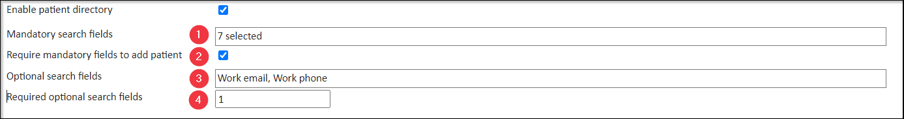
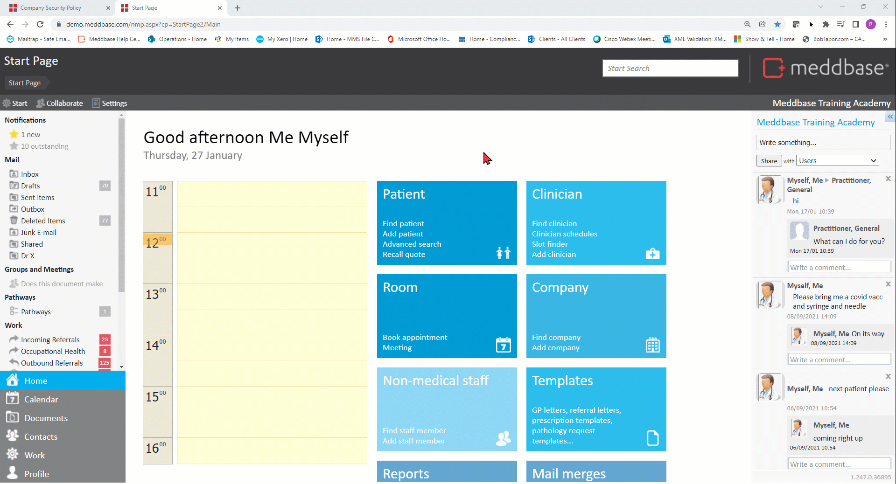
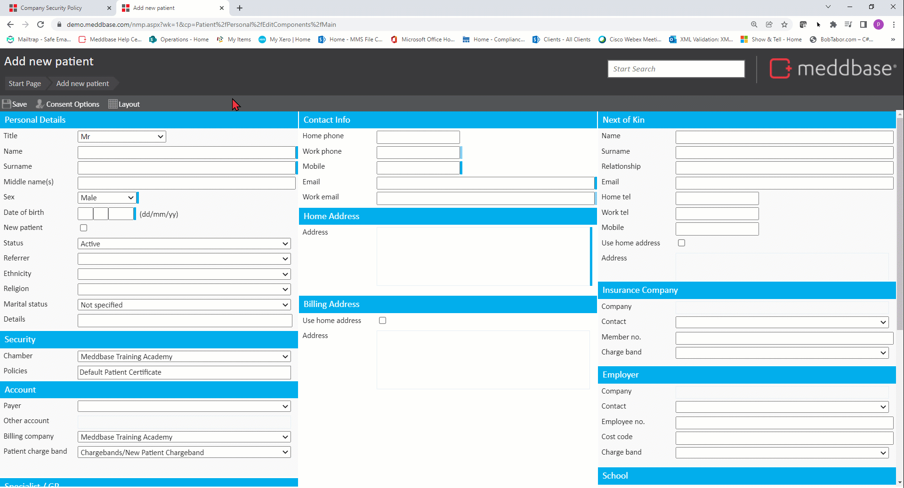

The Patient Directory Search feature is an enhancement of the Patient Search available on the Meddbase Start Page. The Patient Directory Search feature helps to ensure appropriate access to patient records within an organisation i.e. within a single chamber.
This article will describe the setup process and implications of the Patient Directory Search feature as well as describe key security aspects that need to be considered.
To set up the Patient Directory Search, the following steps apply:-
*This feature is required to enable the Patient Directory Search feature. Meddbase allows you to have multiple Patient Certificates, each assigned to a portion of your patients and specific Groups of Meddbase users having access rights on a given Patient Certificate but not on the other(s).
You will be presented with the configuration options for the directory search:

1. Mandatory search fields - clicking in the field opens a list of search fields and allows you to multiselect mandatory fields. Users will need to provide details for these fields before they can find the patient in the directory*. When selected, these mandatory search fields will be marked with a dark blue bar in the patient search feature on the Start Page.
*When the Patient directory feature is enabled, a new permission will appear on Patient Certificates called Can Find In Directory. Users who have this permission but not View Patient Demographic can find the patient by providing exact demographic details as per the settings. Once the patient is found, the user can combine the policy the patient is currently on with any other Patient Policy the user has the Can Assign Policy permission granted on. Any other user permissions on that policy will also apply for this patient from now on.

2. Require mandatory fields to add patient - the mandatory fields set on Point 1. can also be required for patient registration. Ticking this box will result in the mandatory fields being marked with a dark blue bar on the patient registration page and the user will not be able to add a patient without all mandatory details provided.

Furthermore, Requiring mandatory fields to add a patient in the directory not only makes them mandatory when creating or updating patient records, but also greys out the Add patient button on the search screen until the user has included information for all the mandatory fields - this makes it more likely that users will search for a record correctly before adding them.
3. Optional search fields - clicking in the field opens a list of search fields and allows you to multiselect optional fields. Optional fields will be relevant for both the patient search feature and adding a patient and will be marked with a light blue bar on the respective pages. (Please see .Gifs above)
4. Required optional search fields - allows you to determine how many of the Optional search fields will be required to search and/or add a patient e.g. if 3 Optional search fields have been selected but only 1 is required, the user can choose which one of the 3 they provide details for.
Once the feature is enabled and configured, performing a patient search from the Start Page will prompt the user to provide mandatory and optional details accordingly.
When they perform a full directory search the user can access the patient record for use in a booking.
If the user books an appointment for that patient into the diary of a clinician that would not normally have access to them (because they are not on a policy the consultant has access to) then the patient record will automatically be added to a ‘combined’ policy that allows multiple users or groups of users to access their record.
You can also manually add patients to more than 1 certificate to let users access them without going through the directory search route. This does not subdivide the medical record – if a consultant can access the patient record, they will be able to see medical data recorded by other users, in the interest of sharing a complete and accurate medical history for the patient.
The Patient Directory feature also allows for a scenario where multiple Patient Policies exist, with groups of patients assigned to respective policies. Then, Medical professionals would only have permissions on some (or only 1) of those Policies, meaning they could only interact with patients assigned to those policies.
Next a 'Central Booking Team' and its members (created under Admin > User Management) would only have 2 permissions granted on all existing Patient Policies:
The 'Central Booking Team' could then temporarily interact with these patients and book them for appointments by following these steps:
1. From the Start Page navigate to the Clinician tile and click Slot Finder
2. Provide mandatory search details as per the Patient Directory setup
3. Once the patient is found in the directory, click them
3. In the Slot finder search for available clinicians